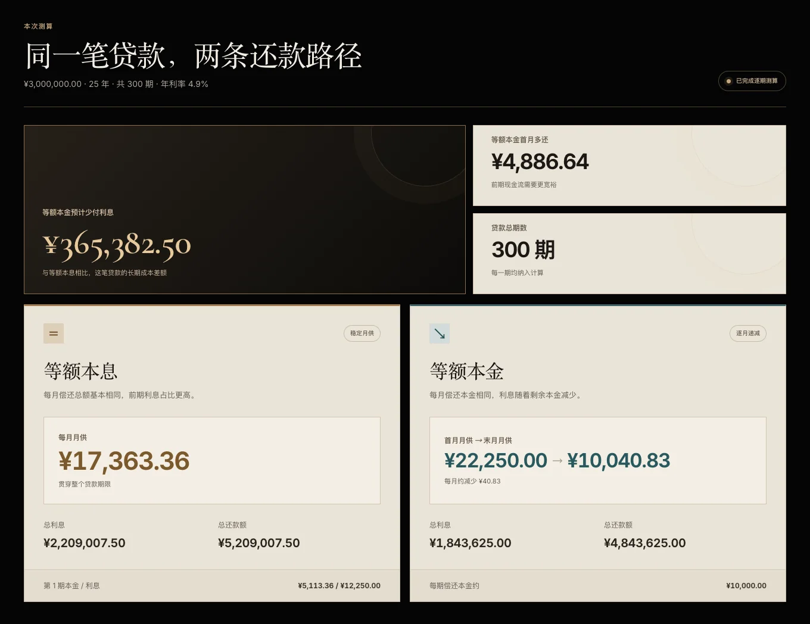

01逐期真实测算
02双方案可视比较
03完整明细可追溯
01 / 作品概览
把复杂的还款过程，
放进一个清晰的界面。
输入同一组贷款条件，页面会逐月生成两份完整计划。关键结论、趋势图与明细表读取同一份计算结果，让比较有依据。

真实界面预览 · 默认示例：300 万元 / 25 年 / 年利率 4.9%
进入完整界面02 / 两种路径
同一笔贷款，
两种不同的时间节奏。
月供稳定或逐月递减，差别不只在最终总额，还在每个月需要拿出多少现金。
03 / 交互亮点
从条件输入，
走向有依据的判断。
不只给出一个总数。每一步都能继续展开，让使用者从概览走到具体月份。
输入即更新
修改金额、期限或利率，两种方案随之重新计算。
并排看差别
把月供压力、剩余本金与长期利息成本放在同一视角。
逐期可追溯
切换还款方式、展开全部明细，并导出完整 CSV。
04 / 进入作品